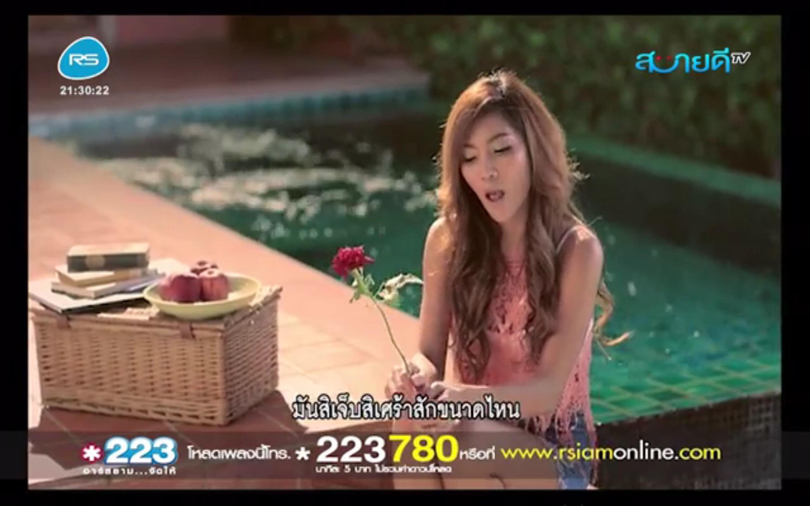
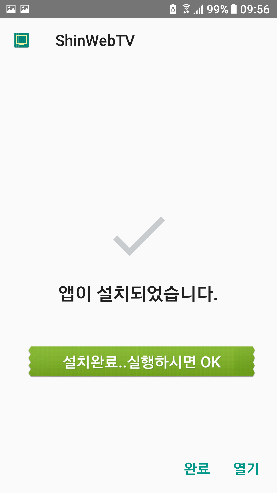
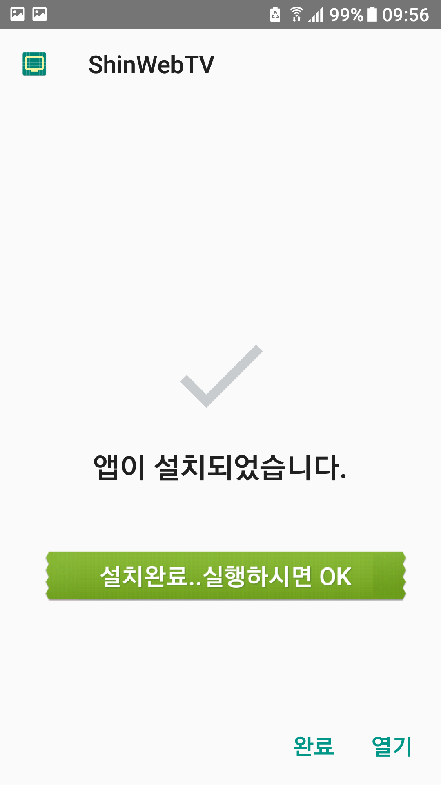

*프로그램(안드로이드6 이상) 다운로드는 설명이후 화면 아래에 있습니다
하나의 프로그램에 한국/태국 방송을 모두 담았습니다.
1.한국방송은 공중파(4채널), 골프(2채널), 영화(5채널), 뉴스,케이블,대체채널등 총 22채널
(총3대의 서버<기본서버+2대의 보조/대체서버(4채널)>가 있어 서버문제시 자동전환하는 기능이 있습니다.<수동은 해당채널을 한번 더 클릭>)
보조서버란 기본체널서버 문제시 같은채널이지만 다른서버로 전환하는것이고
대체서버란 같은채널이 없이 다른채널로 바꾸는것입니다(SuperAction->채널차이나/채널A->MBN/YTN->EBS1/TVN->MNet)
2.태국방송은 기본채널, 영화, 다큐, 노래(1채널),라디오영상(1채널)등 총 14채널
메뉴표시된 상태에서의 한국방송(TV 조선)

전체화면에서의 한국방송(TV 조선)

전체화면에서의 태국방송(싸바이디 TV-สบายดี TV)
메뉴표시된 상태에서의 태국방송(33 HD)

전체화면과 메뉴간 전환은 화면상에서 더블탭(두번톡톡) 종료버턴으로 종료
(자동감지로 보조채널로 이동하지만 서버문제로 너무늦거나 시청불가능할때 해당채널을 한번더 눌러서 보조/대체채널로 이동가능)
한국/태국방송간 이동은 채널리스트 상단의 버턴(KOR<->THAI) 클릭
리모컨방식의 셋탑박스는 거실에서 티비를 보는듯한 느낌으로 편합니다(치앙마이 거주자만 별도문의)
태블릿이나 스마트폰은 터치방식으로 일반 어플처럼 쓰시면 됩니다
(스마트폰의 무선화면공유를 이용하시려면 동글이를 하나 장만하시어 티비와 HDMI 연결하는 방법도 추천 드립니다)
아래 동영상은 집에서 셋탑방식으로 사용하는 영상(무음)입니다. 리모컨에 상하(채널바꾸기),좌우(풀화면/한태전환) 버턴 만으로 무지 편리하고 티비와 HDMI연결하여 쓰니 집에서 TV보는 느낌으로 쾌적합니다 ^.^
우선 무료체험(2일)을 경험해 보신후 본인이 원하는 기간을 선택하시면 됩니다.
1. 단기여행객용으로 5,10,15일 단위로 선택가능(*동시 최대 50명한정)
2. 거주자및 멤버용은 1개월단위(*최대 50명한정) -- **2개월이상 멤버는 받지않습니다
-인원에 제한을 두는 이유는 서버폭주로 인해 서비스만족도가 떨어지거나 서버폐쇄를 막기위함입니다
-2개월이상의 장기멤버가 없는 이유는 무조건 팔고 나몰라라 먹튀하는 경우를 막기 위함입니다
*그저 막팔아먹고 결국 나중에 사라져서 황당한 시청자의 경험(어쩌고PAD2)을 저도 했답니다..ㅠ.ㅠ
비용은 하루당 태국바트는 25바트 원화로는 1000원 정도입니다
채널변경시 보통3-5초내에 완료되고 늦어도 10초이내에 되지만 태국내 인터넷속도가 불안하거나 방송을 송출하는 서버의 자원문제(동시에 너무많은 접속자),시스템점검 등에 따라 접속이 안되거나 느리거나 멈추는 현상이 있을수 있으며 이럴때는 다른채널 또는 대체채널로 변경헤 보세요 참고로 *태국에서 빠르지도 않은 심카드 1Mbps 속도로도 시청에 크게 무리가 없을정도입니다*
프로그램의 구동방식은 일부채널은 여러분도 직접 해당사이트에 접속하여 볼수도 있고 일부채널은 찾을수없는 경우도 있을것입니다. 또한 사이트에 접속하면 해당사이트의 이런저런 광고등 무거운 내용이 로드된후 보시게 되는데 저는 여기저기 흩어져있는 방송송출서버에 직접 접속하여 전혀 무겁지도 않고 이리저리 왔다갔다하는 수고로움을 줄입니다. 편안히 티비채널 돌리듯 볼수있으며 방송서버의 주소가 바뀌는 경우 이를 반영토록 되어 있고 해당서버에 문제가 있는경우에 대비하여 2개의 백업채널을 확보하여 자동전환하는 다른곳에는 존재하지않는 기능까지 갖추고 있습니다. 저는 실제 방송송출서버를 운영하지는 않습니다. 단지 번거로움없이 보다 쾌적하고 일반적 방법보다 빠른속도로 직접연결을 하는것이 이프로그램의 구동방식입니다. 따라서 해당서버에 부하를 주지않으면서 동시의 최상의 서비스를 하기위해 최소 인원으로 한정하여 서비스를 하는것입니다.
아래 ShinWebTV 설치파일을 아래의 설치절차를 참고하여 설치하시면 됩니다
구글플레이에 등록하지 않았기 때문에 설치시에는 출처를 알수없는 앱 설치를 허용하셔야합니다
이프로그램은 안드로이드 전용어플로 안드로이드 버전6(마쉬멜로우) 이상이어야 설치가 가능합니다
 
